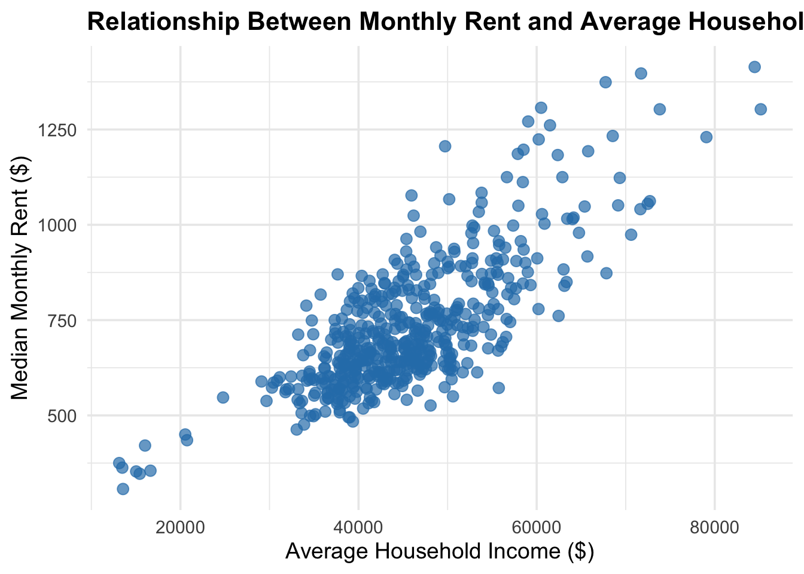
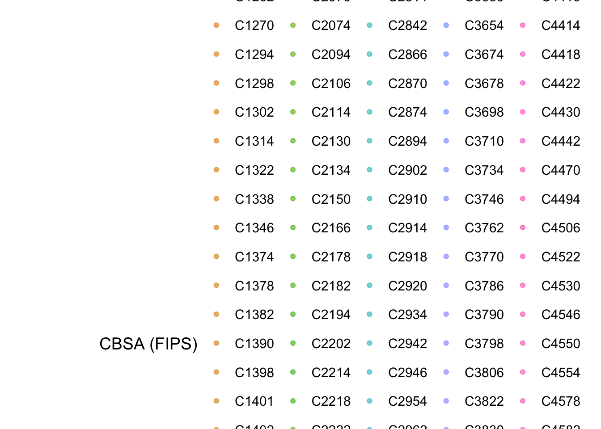
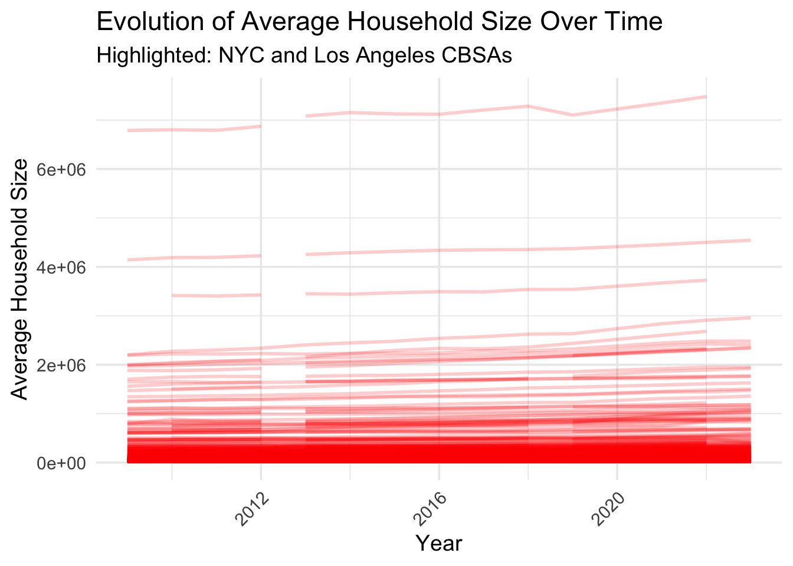
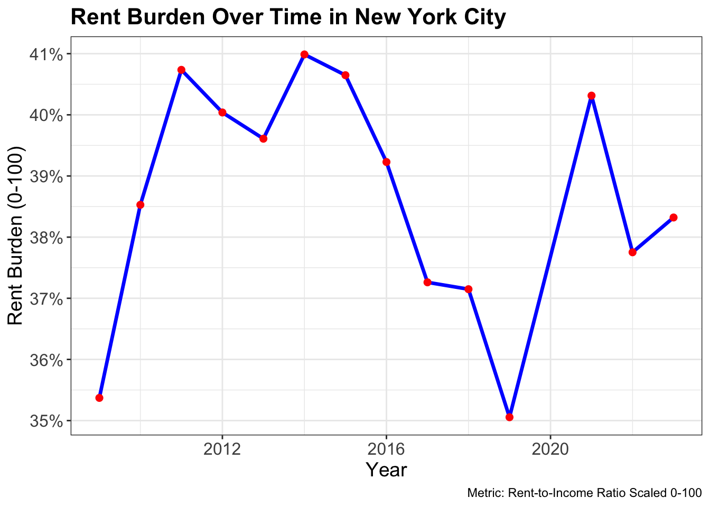
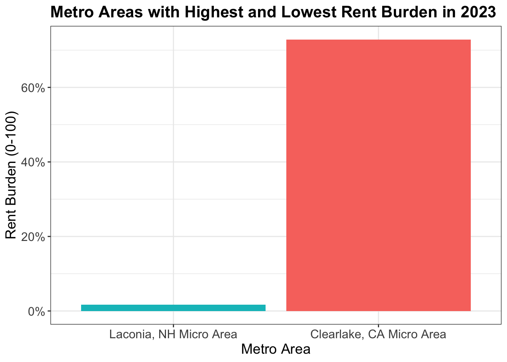
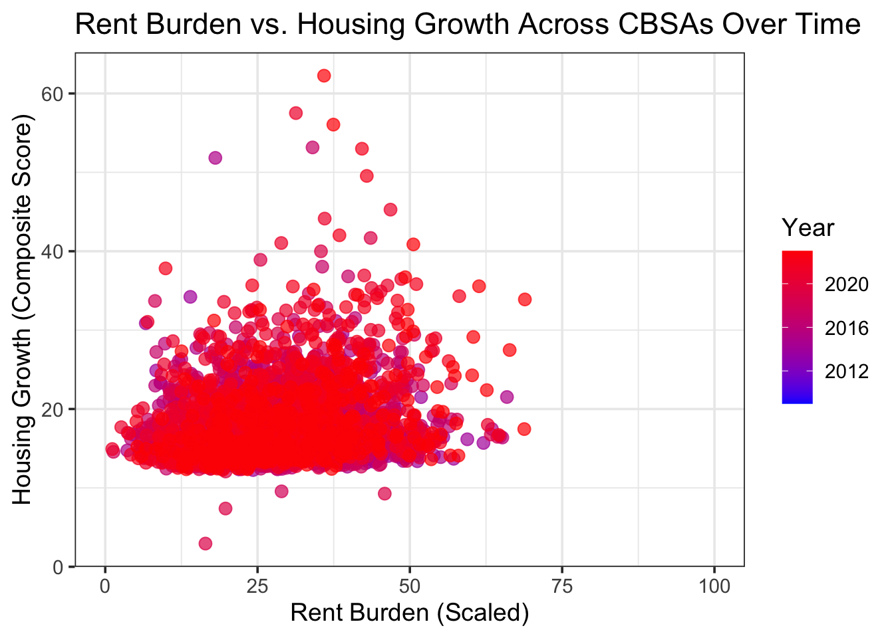
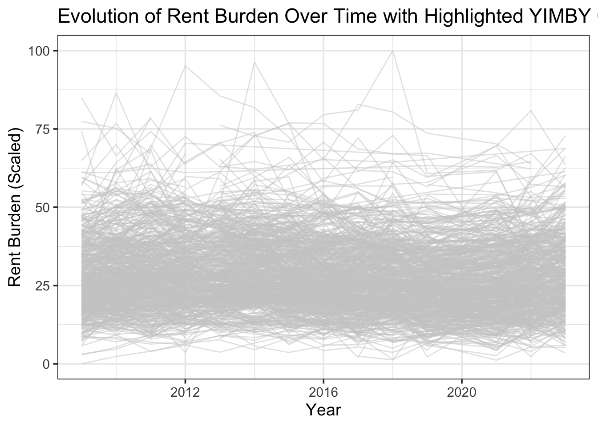

Mini-Project #02: Making Backyards Affordable for All
Introduction
Finding affordable housing in U.S. cities can feel like a moving target—some metro areas seem to keep up with demand, while others struggle to provide enough homes for their residents. In this analysis, we dive into the numbers to understand why. We combine several datasets: PERMITS, which tracks new housing units authorized each year; HOUSEHOLDS, which tells us about average household sizes; and RENT, which records monthly rent levels. By connecting these datasets through geographic identifiers, we can see how housing supply, affordability, and demographics interact over time.
We start with simple but telling questions: Which cities are building the most new housing? Where are households growing or shrinking? Which areas have the highest incomes, and how do local industries like finance, tech, and healthcare shape employment trends? From there, we dig deeper, creating indices of housing affordability (how much of a household’s income goes to rent) and housing growth (new units relative to population growth). These measures highlight metros that are successfully expanding housing versus those struggling to keep up. By looking at trends over time, we can better understand which cities are making housing more accessible and which ones might need extra support—offering a clear picture of how policy, economics, and demographics intersect in shaping our urban landscape.
Data Integration and Initial Exploration
Question 1:Which CBSA permitted the largest number of new housing units in the decade from 2010 to 2019 (inclusive)?
CBSA total_permits NAME
1 26420 482075 Houston-Sugar Land-Baytown, TX Metro AreaQuestion 2: In what year did Albuquerque, NM (CBSA 10740) permit the most new housing units?
CBSA new_housing_units_permitted year
1 10740 4021 2021Question 3: Which state had the highest average individual income in 2015?
state total_income total_population avg_income
1 DC 202663489140 6098283 33232.88Question 4: What is the last year in which the NYC CBSA had the most data scientists (NAICS 5182)?
Question 5: What fraction of total wages in the NYC CBSA was earned by people employed in the finance and insurance industries (NAICS code 52)? In what year did this fraction peak?
YEAR finance_wages total_wages fraction
1 2014 119105615711 2.587097e+12 0.04603833Initial Visualizations
Relationship between monthly rent and average household income per CBSA in 2009

Relationship between total employment and employment in health care (NAICS 62) across CBSAs over time

Evolution of average household size over time by CBSA
Warning: Tried to calculate with group_by(), but the calculation failed.
Falling back to ungrouped filter operation...Warning: No shared levels found between `names(values)` of the manual scale and the
data's colour values.
Building Indices of Housing Affordability and Housing Stock Growth
Standardization
# A tibble: 6 × 7
GEOID NAME year B25064_001 B19013_001 rent_to_income rent_burden
<dbl> <chr> <dbl> <dbl> <dbl> <dbl> <dbl>
1 10140 Aberdeen, WA Mic… 2009 650 36345 0.0179 35.3
2 10180 Abilene, TX Metr… 2009 712 42931 0.0166 29.3
3 10300 Adrian, MI Micro… 2009 645 45640 0.0141 18.0
4 10380 Aguadilla-Isabel… 2009 363 13470 0.0269 77.4
5 10420 Akron, OH Metro … 2009 723 47482 0.0152 23.0
6 10500 Albany, GA Metro… 2009 624 36218 0.0172 32.3Scaling + Transformation
# A tibble: 6 × 9
GEOID NAME year B25064_001 B19013_001 rent_to_income rent_burden_scaled
<dbl> <chr> <dbl> <dbl> <dbl> <dbl> <dbl>
1 10140 Aberdeen,… 2009 650 36345 0.0179 35.3
2 10180 Abilene, … 2009 712 42931 0.0166 29.3
3 10300 Adrian, M… 2009 645 45640 0.0141 18.0
4 10380 Aguadilla… 2009 363 13470 0.0269 77.4
5 10420 Akron, OH… 2009 723 47482 0.0152 23.0
6 10500 Albany, G… 2009 624 36218 0.0172 32.3
# ℹ 2 more variables: rent_burden_sd <dbl>, rent_burden_times_baseline <dbl>
Attaching package: 'scales'The following object is masked from 'package:purrr':
discardThe following object is masked from 'package:readr':
col_factorWarning: Using `size` aesthetic for lines was deprecated in ggplot2 3.4.0.
ℹ Please use `linewidth` instead.

Housing Growth
# A tibble: 6 × 5
GEOID NAME year rent_burden_scaled composite_growth
<dbl> <chr> <dbl> <dbl> <dbl>
1 10140 Aberdeen, WA Micro Area 2009 35.3 NA
2 10180 Abilene, TX Metro Area 2009 29.3 NA
3 10300 Adrian, MI Micro Area 2009 18.0 NA
4 10380 Aguadilla-Isabela-San Sebasti… 2009 77.4 NA
5 10420 Akron, OH Metro Area 2009 23.0 NA
6 10500 Albany, GA Metro Area 2009 32.3 NAWarning: Removed 4006 rows containing missing values or values outside the scale range
(`geom_point()`).

Policy Brief
To promote affordable housing nationwide, Congress should establish a federal program encouraging municipalities to adopt YIMBY-friendly policies. A primary sponsor from New York City, NY, which has decreasing rent burden, strong housing growth, and a high concentration of young adults in creative and tech occupations, alongside a co-sponsor from San Francisco, CA, which has high rents, slow housing development, and comparatively fewer young households, would provide a compelling contrast. Key metrics supporting this initiative include a rent burden metric, which measures the share of income spent on rent over time, and a housing growth metric, which assesses new housing permits relative to population and population growth over a five-year window. These metrics objectively identify cities with successful YIMBY policies and those needing federal support. Mobilizing support from healthcare professionals, tech/finance workers, and young adult creative professionals, who represent significant employment in these cities, strengthens the bill’s political feasibility, as reducing rent burden benefits these groups by increasing disposable income and improving living conditions. Prioritizing cities that combine high early rent burden, decreasing trends, population growth, above-average housing growth, and strong millennial presence ensures federal resources have maximum impact while providing a clear framework for targeting and evaluating policy success.
Conclusion
Our analysis highlights the significant variation in housing affordability across U.S. metro areas. Cities like New York City show trends of decreasing or stabilizing rent burden over time, reflecting relative success in expanding housing supply and supporting residents’ income needs. In contrast, other metros experience extremely high or growing rent burdens, signaling that housing supply has not kept pace with demand and residents face financial strain.
By combining rent, income, and household data into a rent burden metric, and comparing across years and metro areas, we can identify regions that are successfully managing housing affordability and those that need intervention. This approach provides a clear framework for policymakers: supporting metros with high rent burdens and constrained housing growth can help alleviate financial pressure, improve access to housing, and foster more equitable urban development.
Ultimately, tracking these metrics over time allows for targeted strategies that prioritize cities where housing is most unaffordable, while learning from areas that have been able to expand supply effectively. This ensures that policy efforts have maximum impact in improving living conditions and economic mobility for residents across the country.